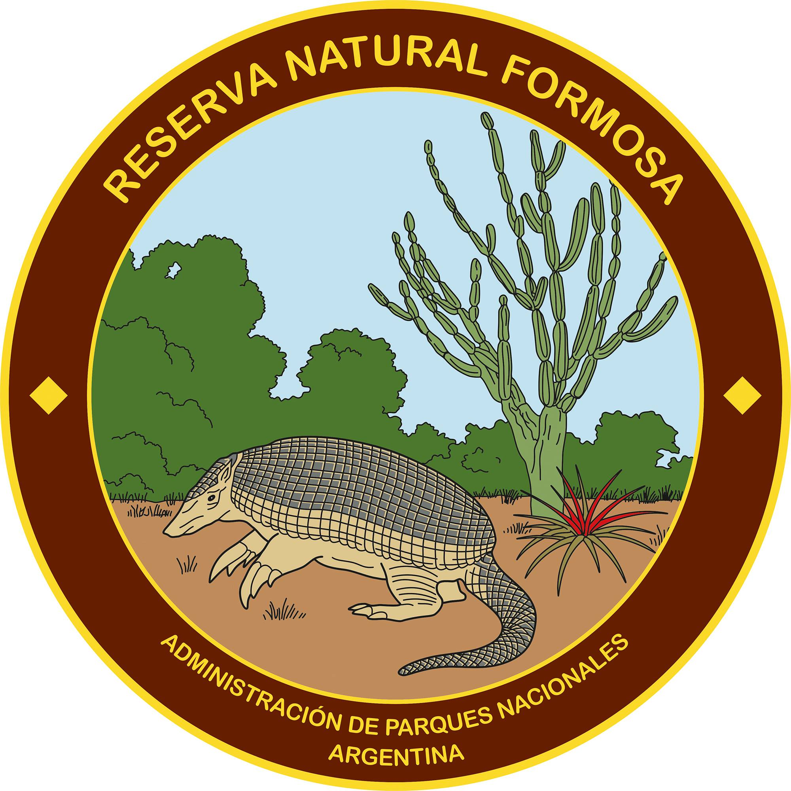

Ubicación: Se encuentra a pocos kilómetros al este de la ciudad de Formosa, la capital provincial.
Características: La Reserva Natural Formosa protege una extensa área de bosques, esteros y humedales. Es el hogar de una gran variedad de especies de flora y fauna autóctonas.
Biodiversidad: La reserva alberga una rica biodiversidad, incluyendo especies de aves, mamíferos, reptiles y peces. Es especialmente conocida por ser un importante refugio para aves migratorias.
Actividades: Entre las actividades que se pueden realizar en la Reserva Natural Formosa se encuentran la observación de aves, paseos en lancha, caminatas, pesca deportiva y safaris fotográficos.
Senderos: La reserva cuenta con varios senderos habilitados que permiten a los visitantes explorar la zona y disfrutar de la naturaleza.
Centro de Interpretación: La reserva cuenta con un centro de interpretación donde los visitantes pueden obtener información sobre la flora, la fauna y la historia de la reserva.
Conservación: La Reserva Natural Formosa fue creada con el objetivo de proteger la biodiversidad de la región y promover el desarrollo del turismo sostenible.